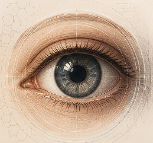

Case 01
Case Title

What is the most likely diagnosis?
Choose the best answer
Spot Diagnosis
Study the image, make your diagnosis, then reveal the answer and key learning points.
How to use
Each card shows a clinical image and a prompt. Think of your diagnosis, then reveal the answer to see the key teaching points.
Use the filters to focus on specific subspecialties or try a random case.
Images in this pack were taken from Kanski-derived teaching material and are used here for educational study.
Your progress
0 / 0 cases completed
0 bookmarked
Case 01

What is the most likely diagnosis?
Choose the best answer
Case 01
Revealed